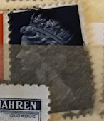
| SOURCE | TITLE| IMAGE MATCH | click to source page |
| eBay UK | A Century Of The Monarchy Monarchs Of The 20th | eBay UK | 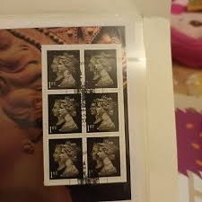 |
| Mystic Stamp Company | UNV413-16 - 2008 UN Vienna Definatives - Mystic Stamp Company | 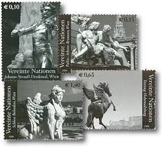 |
| CiBaFil | ITALY 2018 Tuna Maruzzella CB 1870 ais | 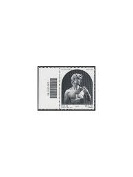 |
| Todocolección | bulgaria nº yvert 2637/2*** año 1981. tesoro de - Buy Stamps about art on todocoleccion | 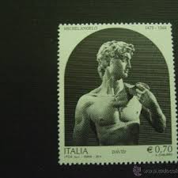 |
| eBay | Israel 1968 RESISTANCE FIGHTER MNH Sc 364 | eBay | 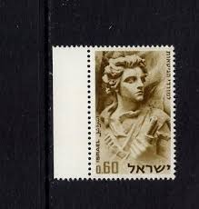 |
| eBay | Vatican, #617-22 Classical Sculptures set, 6v, MNH | eBay | 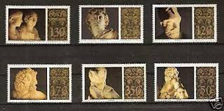 |
| eBay UK | GB3026) Great Britain 2000, Her Majesty's Stamps Presentation Pack No.M03 | eBay UK | 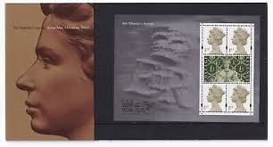 |
| eBay UK | ART HISTORY BRITISH MUSEUM 2003 ALEXANDER THE GREAT ROYAL MAIL | eBay UK | 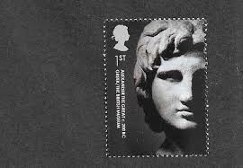 |
| Bob Shop | Israel - Israel - 1 Block of 4 - 1968 - MM for sale in Cape Town (ID:670843409) | 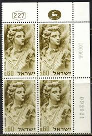 |
| eBay | O) 1985 MEXICO, REVOLUTION, FRANCSICO MADERO SCT 1418 110p, XF | eBay | 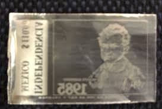 |
| CollectorBazar | GRENADA STAMPS MNH MICHELANGELO. ITALIAN SCULPTOR, PAINTER, ARCHITECT AND POET (1475 - 1564.) | 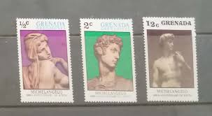 |
| HipStamp | Grenada Grenadines Michelangelo 67-73 CTO VF NH | Caribbean - Grenada, Stamp / HipStamp | 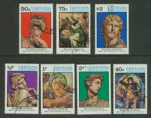 |
| 100daysscotland.co.uk | Susan McNaughton — 100 Days Project | 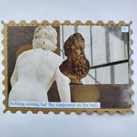 |
| Etsy | Queen Elizabeth II GB Stamps: 17p Grey-blue Machin Used (x25) for Crafts - Etsy | 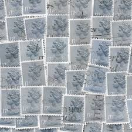 |
| modlowarvai.com | Browse Listings in Stamps > Europe > Greece - 80 items per page - Recently Listed | Modlowarvai | 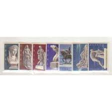 |
| eBay | FUJEIRA MICHEL# 846-850 USED ART/SCULPTURE | eBay | 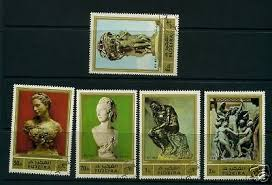 |
| junnorge.no | Royal Mail Stamps GB - PRESENTATION PACK - 2005 - ROYAL WEDDING Postage Stamps 2nd Class | 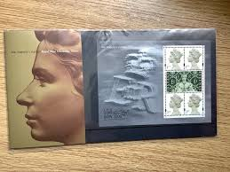 |
| ebid.net | Russia USSR 1975 Michelangelo strip 3 unmounted mint stamps art David sculptures on eBid United Kingdom | 190229732 | 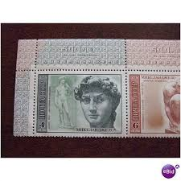 |
| Free stamp catalogue | Stamps from Curaçao - Freestampcatalogue.com - The free online stampcatalogue with over 500.000 stamps listed. | 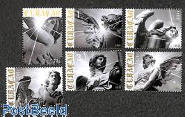 |
| Alamy | Used blue italia stamp hi-res stock photography and images - Alamy | 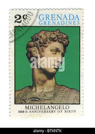 |
| eBay | VATICAN CITY 1977 Art Treasures - MNH | eBay | 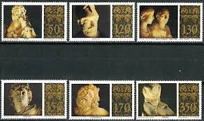 |
| PicClick UK | 2018 10P COINS Silver Proof A-Z Royal Mint Alphabet Letters British Full Set £89.99 - PicClick UK | 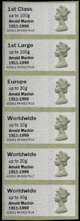 |
| CiBaFil | ITALY 2006 Complete Vintage 78v + 2 s/s MNH** | 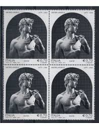 |
| Collect GB Stamps | pb4101 The British Museum | 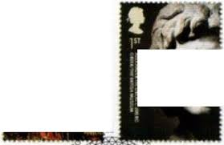 |
| eBay | Vatican 617-622, MNH. Michel 705-710. Roman Sculptures in Vatican Museums, 1977. | eBay | 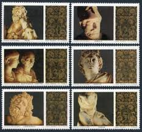 |
| eBay UK | GB 2000 Her Majesty's Royal Mail M/Sheet Presentation Pack Catalogue £80 NB3900 | eBay UK | 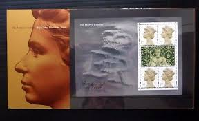 |
| eBay | FRANCE UNESCO SCOTT 203 Y&T 32 FD MAXIMUM MAXI CARD 1965 | eBay | 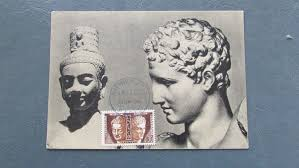 |
| eBay | Great Britain Stamp Scott# 1942 Stamp Show 2000, London 2000 MNH L732 | eBay | 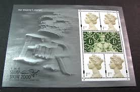 |
| eBay | Michelangelo, USSR 1975, Soviet Union postage stamps | eBay | 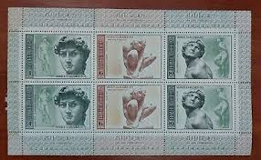 |
| eBay | VATICAN Sc#617-22 1977 Sculptures of Vatican Museum MNH | eBay | 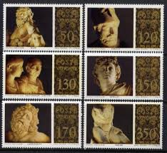 |
| eBay | British Elizabeth II Stamps £ 1.30 Denomination for sale | eBay | 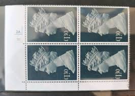 |
| Flickr | chrissy forte | Flickr | 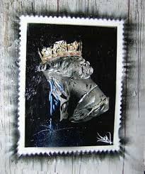 |
| eBay | RUSSIA - 1975 MICHELANGELO - SCOTT 4296 TO 4298 | eBay | 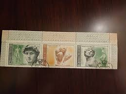 |
| eBay | Individual Panes from DX24 / DB5(24) 2000 Special by Design Prestige Booklet | eBay | 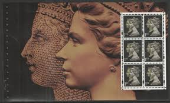 |
| eBay | DDR MNH ** 3250-1 SC 2750-1 Schadow | eBay | 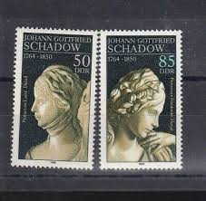 |
| Evaluation please.. Certified King George VI Waterlow Essays 14製樂 Stamp Essays On aesthetic grounds well relative rarity, essays always much sought after and tremendous any stamp collection. These particular stamp (including perforate | 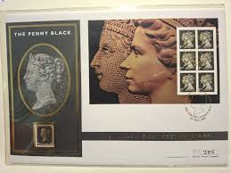 | |
| eBay | DDR MNH ** 3250-1 SC 2750-1 Schadow blocks of 4 | eBay | 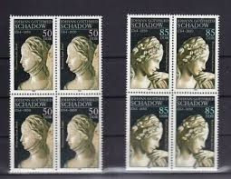 |
| HipStamp | Grenada; Scott 676, 678; 1975; Unused; NH | Caribbean - Grenada, General Issue Stamp / HipStamp | 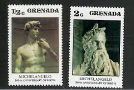 |
| eBay.de | David Michelangelo Prova Kopf in grün + gold Kammverzahnung | eBay.de | 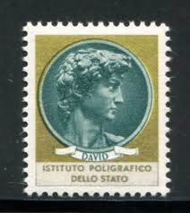 |
| HipStamp | Great Britain 1990 Scott MH193 used - 20p, Queen Victoria & Elizabeth II | Great Britain, Back of Book (Other) - Machin Head Stamp / HipStamp | 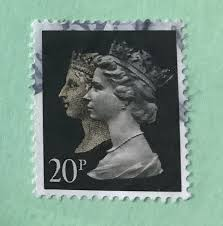 |
| Shutterstock | David Statue: Over 13,095 Royalty-Free Licensable Stock Photos | Shutterstock | 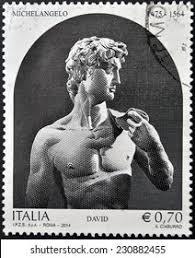 |
| Alamy | Penny postage stamp uk hi-res stock photography and images - Alamy | 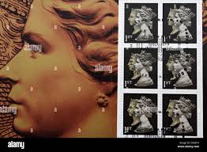 |
| Alamy | Used blue italia stamp hi-res stock photography and images - Alamy | 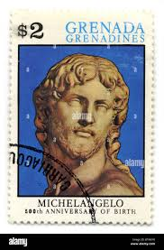 |
| eBay | Netherlands SC 206-8 VFU (10fgf) | eBay | 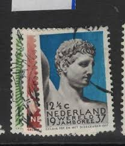 |
| eBay | RUSSIA 1975 MICHELANGELO STRIP S 4296-4301 CTO | eBay | 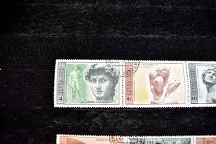 |
| eBay | AUSTRIA # 879 MNH WORLD VETERANS FEDERATIONS | eBay | 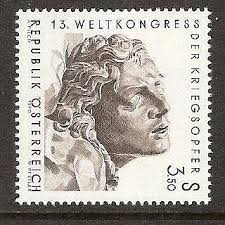 |
| eBay | PENRHYN 1976 Easter, IMPERFORATE Set of 3 Sheetlets MNH | eBay | 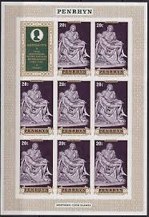 |
| Design Bundles | Postage Stamps Mockup | 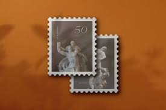 |
| eBay | Sculptures 50 Different Cancelled Stamps | eBay | 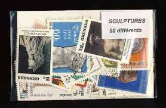 |
| Alamy | 1975s hi-res stock photography and images - Alamy | |
| Todocolección | sj) 1936 monaco block of 10 imperforated shield - Buy Antique stamps of Mexico on todocoleccion | |
| eBay | Israel 1968 SG392 25th Ann Warsaw Ghetto Rising used as photo | eBay | |
| eBay | 1st Denomination British Stamp Booklets for sale | eBay | |
| LarkGallery | LarkGallery OnLine Events | |
| Bob Shop | Austria - Austria - 1970 - Used for sale in Kraaifontein (ID:670842401) | |
| Etsy | Pride & Prejudice Sticker | Bookish Postage Stamp Style - Etsy | |
| eBay | Israel Stamp Sc 364x2, Set Corner Plate Block with Tabs MNH (405A-09) | eBay | |
| vividagallery.com | Italian Michelangiolesca Stamp Female Profile Orange 5 Lire 1963 Italy Tapestry by Vivida Gallery - Vivida Gallery | |
| Etsy | Elvis Presley Stamp Art Print | Limited Edition Monochrome, 8x10 - Etsy UK | |
| eBay UK | Superb Postage Austrian Stamps for sale | eBay UK |